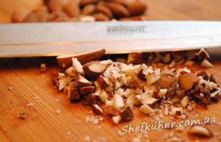
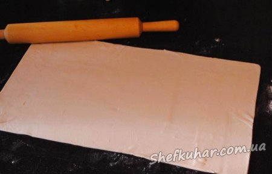
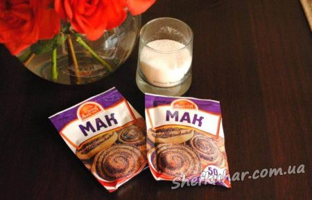
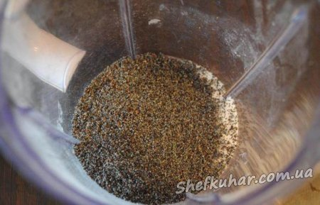
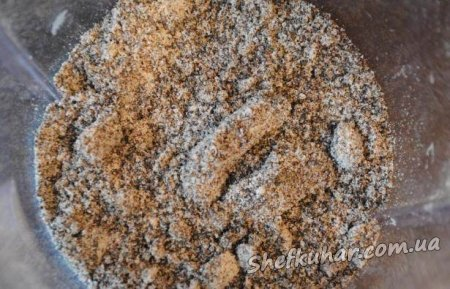
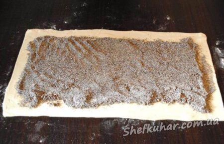
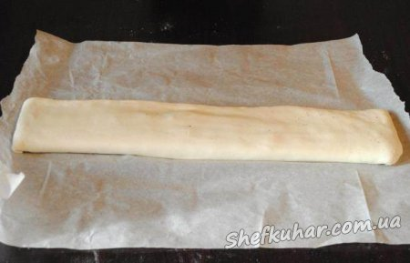
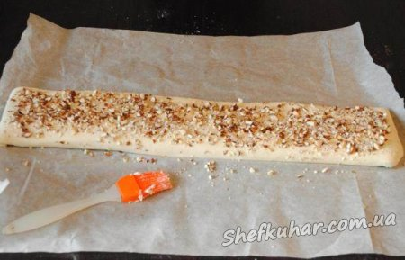
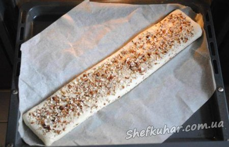
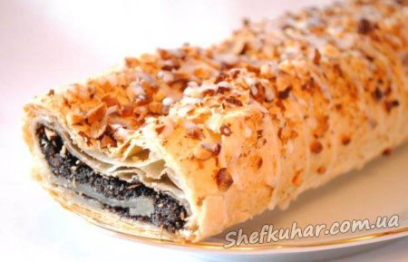

Листковий рулет з маком
Інгредієнти: тісто листкове - 0,5 кг; горіхи - жменя; мак - 100 г; цукор - 0,5 склянки; цукрова пудра - 4 ст. л; вода - 1 ст. л; жовток - 1 шт.; сік лимона - 0,5 ч. л.
Кулінарний рецепт листкового рулету з маком.
Горіхи порубати ножем.

Листкове тісто розморозити і розкачати в прямокутник.

Для начинки можна використовувати готовий напівфабрикат, а можна приготувати начинку самостійно.

Мак змішати з цукром.

І змолоти в блендері.

Викласти начинку на прямокутник тіста.

Тісто згорнути конвертом, прищепити краї.

Змастити верх рулету жовтком або вершками і посипати горішками.

Викласти рулет на пергаментний папір і відправити випікатися в духовку на 25 хвилин при 180 градусах.

Готовий рулет при бажанні можна покрити помадкою, змішавши цукрову пудру, сік лимона і воду.

При використанні не дріжджового тіста, рулет під час випічки сильно піднявся, довелося трішки його обім'яти.